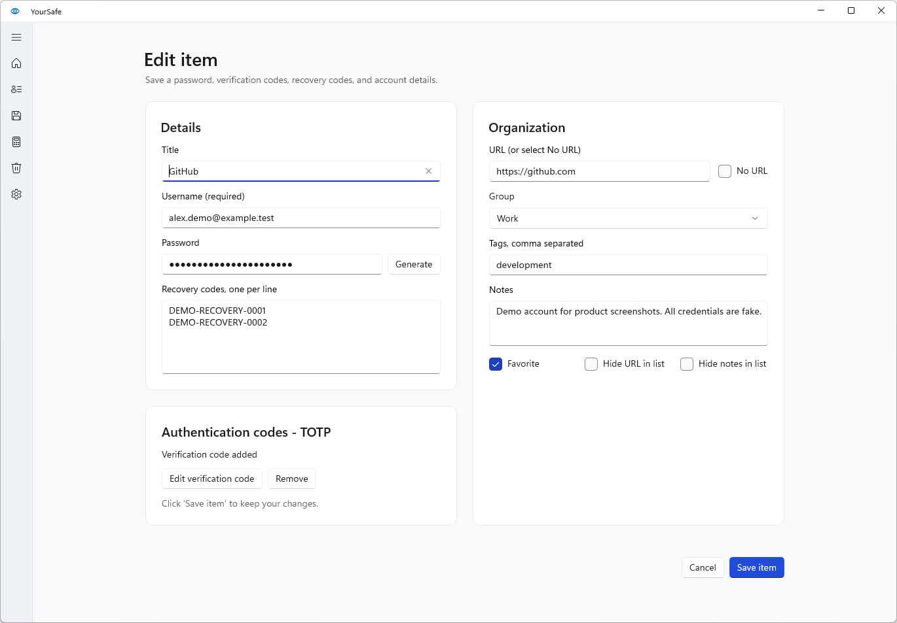
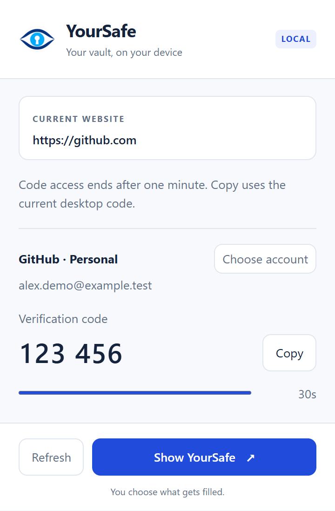

Kho của bạn
- Mật khẩuTài khoản & ghi chú
- Mã xác thựcMã TOTP cho tài khoản
- Mã khôi phụcMã dự phòng của website
Dữ liệu được lưu
trên máy của bạn.
trên máy của bạn.
Mật khẩu, mã xác thực và mã khôi phục — cùng một kho trên Windows. Không cần tài khoản trực tuyến.
Tải cho WindowsWindows 64-bit · Dùng được khi không có internet
Xem hướng dẫn cài đặt
Từ mật khẩu hằng ngày đến mã xác thực và bản sao lưu, quản lý ngay trong YourSafe.
KHO MẬT KHẨU
Tìm kiếm, đánh dấu tài khoản hay dùng và sắp xếp theo nhóm hoặc nhãn.
THÔNG TIN TÀI KHOẢN
Mật khẩu, địa chỉ website, ghi chú và mã khôi phục nằm trong cùng một tài khoản.

TẠO MẬT KHẨU & SAO LƯU
Nhập tệp CSV xuất từ trình duyệt hoặc ứng dụng quản lý mật khẩu. Xem trước khi nhập; tài khoản trùng không bị ghi đè.
BROWSER EXTENSION
Chọn tài khoản trong YourSafe để điền thông tin đăng nhập. Bạn quyết định tài khoản nào được điền; tiện ích không tự gửi biểu mẫu.
Với tài khoản có TOTP, xem và sao chép mã xác thực ngay trong tiện ích khi kho Desktop đang mở.
Chrome, Edge & Brave · Bản thử cài thủ công bằng Load unpacked và đăng ký Native Messaging. Gói Desktop -test không tự cài tiện ích.

Giao diện tiện ích thật từ source, dùng dữ liệu demo để minh họa.
LƯU TRỮ CỤC BỘ
Kho được mã hóa và lưu trên máy Windows của bạn. YourSafe không tự đồng bộ lên đám mây. Hãy tự tạo bản sao lưu và cất trên USB hoặc thiết bị khác để phòng khi máy hỏng.
Khi đăng nhập, dùng mật khẩu chính (Master Password) và mã 6 số từ ứng dụng xác thực. Nếu kho bị khóa trong phiên đăng nhập còn hiệu lực, chỉ cần nhập lại mật khẩu chính để mở.
Tải bản Windows 64-bit, kiểm tra gói tải và tạo kho của bạn.
Đọc trạng thái chữ ký và đối chiếu SHA-256 trước khi cài.
Đặt mật khẩu chính, thiết lập ứng dụng xác thực và cất khóa khôi phục ở nơi an toàn ngoài máy.
Bộ cài (.exe): cài ứng dụng để mở từ Start Menu, không cần quyền quản trị máy.
Bản giải nén (.zip): giải nén toàn bộ vào một thư mục rồi mở YourSafe.exe. Không mở trực tiếp trong ZIP hoặc chỉ lấy riêng tệp .exe.
Cất khóa khôi phục (Recovery Key) ngoài máy này. Khi còn kho và khóa, bạn có thể đặt lại mật khẩu chính và ứng dụng xác thực.
Thử lưu một tài khoản, khóa rồi mở lại kho. Sau đó tạo, kiểm tra và cất bản sao lưu có mật khẩu riêng trên USB hoặc thiết bị khác trước khi lưu dữ liệu quan trọng.
Đọc release-status.txt của đúng bản tải: SIGNED là đã ký, UNSIGNED là chưa ký. Bản chưa ký dành cho thử nghiệm; không phải mọi bản phát hành đều có chữ ký.
Với tệp .exe đã ký, nhấp chuột phải → Properties → Digital Signatures để kiểm tra chữ ký còn hợp lệ.
Mở PowerShell trong thư mục chứa tệp tải. So sánh kết quả với mã của đúng tệp trong checksums.sha256; hai mã phải giống nhau.
Get-FileHash .\TEN-GOI-TAI.zip -Algorithm SHA256Thay TEN-GOI-TAI.zip bằng tên tệp ZIP hoặc .exe bạn vừa tải. SHA-256 kiểm tra tệp có bị thay đổi; không thay thế chữ ký của nhà phát hành.
Không cần internet để lưu, tìm hoặc xem mật khẩu. Bạn chỉ cần kết nối mạng khi tải ứng dụng hoặc tải bản mới. YourSafe không tự đồng bộ dữ liệu, gửi thông tin sử dụng hay tự kiểm tra cập nhật.
Nếu vẫn còn kho trên máy và khóa khôi phục, bạn có thể đặt lại mật khẩu chính và ứng dụng xác thực. Nếu mất khóa này, bạn cần một bản sao lưu dùng được cùng mật khẩu riêng của bản sao để khôi phục khi cài lại. YourSafe không giữ bản sao trên mạng để lấy lại giúp bạn.
Không. Chép thư mục ứng dụng không mang theo kho mật khẩu. Để chuyển dữ liệu sang máy mới, hãy tạo bản sao lưu trong ứng dụng rồi khôi phục từ bản đó trên máy mới.
Kho mặc định nằm trong thư mục dữ liệu cục bộ của tài khoản Windows đang dùng và được giữ nguyên khi cập nhật YourSafe.
Mã hóa giúp bảo vệ dữ liệu được lưu trong kho. Nhưng khi kho đang mở, phần mềm độc hại vẫn có thể đọc dữ liệu hoặc chụp màn hình. Hãy bảo vệ máy, dùng mật khẩu chính mạnh và giữ bản sao lưu trên thiết bị khác.
Gỡ ứng dụng vẫn giữ lại kho trên máy. Nếu muốn xóa cả kho, hãy chắc chắn bạn có bản sao lưu dùng được trước khi tự xóa dữ liệu.
Tải YourSafe và bắt đầu lưu mật khẩu trên Windows. Xem hướng dẫn cài đặt và trạng thái bản tải ở trên.